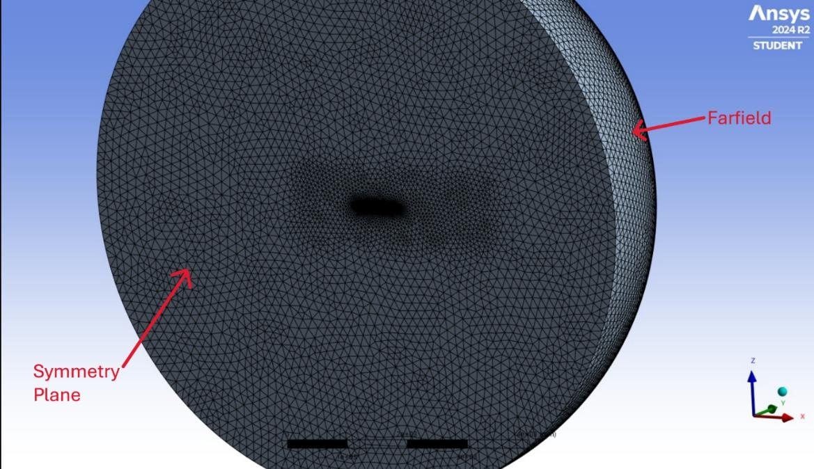
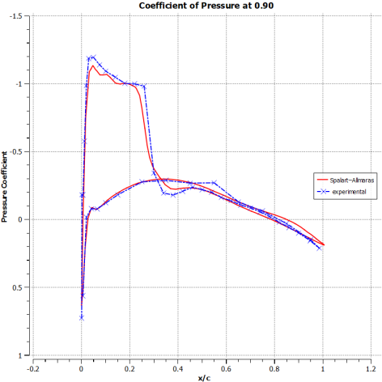
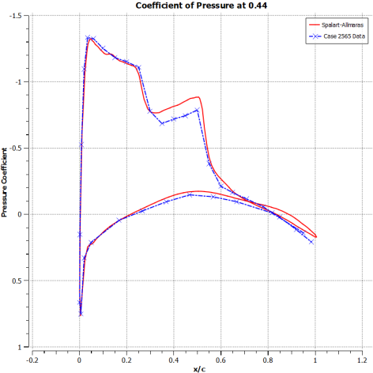
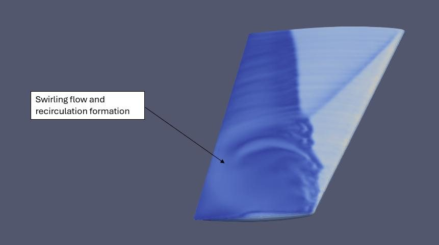
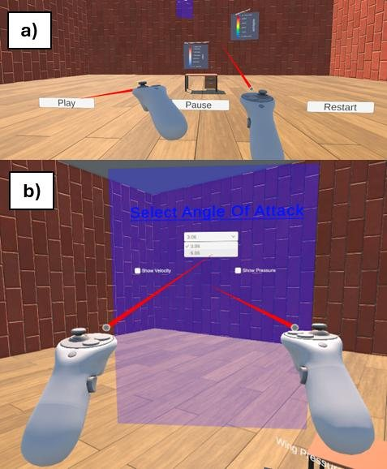
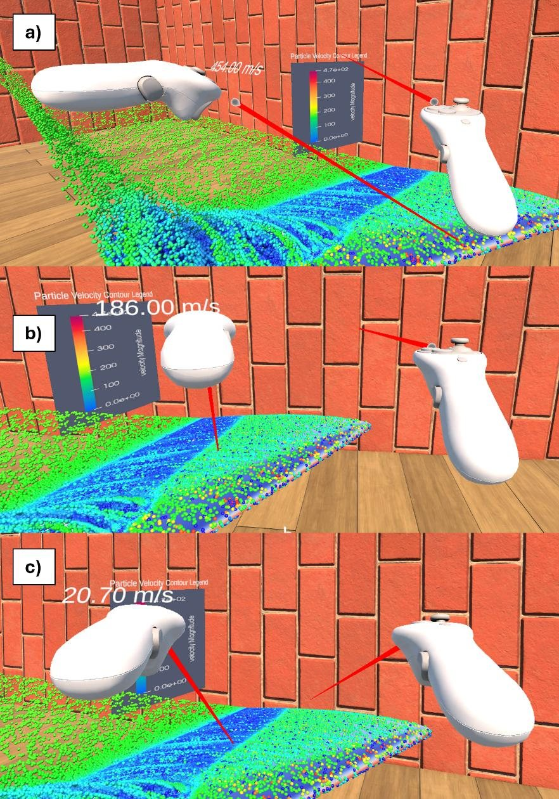

The problem
CFD lets engineers simulate airflow without a wind tunnel, but its results are still mostly viewed as 2D graphs and static contour plots in menu-heavy software like ParaView. That makes genuinely 3D phenomena, such as shockwaves and flow separation, hard to picture, especially for students and non-specialists.
This project asked whether virtual reality could make those phenomena more intuitive. The aim was to build an immersive 3D flow visualisation environment from real, validated CFD data. Rather than a textbook case like a cylinder, I chose the ONERA M6 wing, a standard transonic benchmark that produces a clear upper-surface shockwave and shock-induced separation.
Objectives
- Simulate the transonic flow field around the ONERA M6 wing in ANSYS Fluent and validate it against experimental data.
- Build a pipeline to get CFD results out of engineering software and into a game engine.
- Develop a VR environment in Unity to render and interact with the flow data.
- Animate the flow field so it can be explored in real time.
- Assess VR's value for education and analysis compared with traditional post-processing.
The pipeline: from solver to headset
CFD solvers and game engines don't share file formats, so a large part of the project was building a reliable path between them:
- ANSYS FluentSteady RANS simulation, exported as EnSight Gold (100+ fields)
- ParaView / CFD-PostSpanwise clip planes and wing surface as X3D; streamlines as CSV
- BlenderVertex colours linked to materials, exported as FBX
- Unity 6Custom shader, C# particle system, XR interaction and UI
- Meta Quest 2Streamed via Quest Link (USB 3.0) or Air Link
1. CFD setup
Geometry and domain
The ONERA M6 is a swept, semi-span wing (30° leading-edge sweep, aspect ratio 3.8, taper ratio 0.562) with symmetrical aerofoil sections. I imported the NASA TMR CAD geometry into DesignModeler and built a hemispherical fluid domain ten root chords in diameter. A rectangular body of influence extending 1.5 m spanwise, beyond the wingtip, captured the wake and tip vortex.
Meshing
I used a tetrahedral mesh for its flexibility around the 3D wing, with local refinement where the gradients are steepest: 150 mm global sizing, 56.25 mm in the body of influence, 5 mm on the wing faces and leading/trailing edges, and 3.75 mm at the root and tip.
To resolve the boundary layer efficiently, I targeted y+ ≈ 30 so the Spalart–Allmaras wall functions could model the near-wall region. I worked out the first-layer height from first principles:
- Viscosity from Sutherland's law at 300 K: μ = 1.846×10−5 kg/m·s
- Freestream velocity from Mach 0.84: U = 291.64 m/s, and density from the Reynolds number: ρ = 1.148 kg/m³
- Skin friction estimate Cf = 2.54×10−3, giving wall shear stress τw = 124.1 Pa and friction velocity uτ = 10.40 m/s
- First inflation layer height: y = 4.64×10−5 m



Solver
I chose a pressure-based solver for its stability and fast convergence in steady transonic flow, with the one-equation Spalart–Allmaras turbulence model, which suits external, wall-bounded aerodynamic flows. Air was modelled as an ideal gas. I ran two cases matching the experimental wind tunnel tests:
| Test case | Mach | Reynolds number | Angle of attack | Flow regime |
|---|---|---|---|---|
| 2308 | 0.84 | 11.72×106 | 3.06° | Mostly attached |
| 2565 | 0.84 | 11.72×106 | 6.06° | Shock-induced separation |
2. Validation against experiment
Mesh convergence
I ran four meshes, from 0.89 million to 7.35 million cells. Lift and drag settled as the mesh was refined, and doubling the cell count from the fine to the ultra-fine mesh changed CL by less than 0.5%. I therefore used the fine mesh (3.48M cells) for all results, balancing accuracy against run time.
Lift and drag
| Angle of attack | Mesh | CL CFD | CL exp. | CL error | CD CFD | CD exp. |
|---|---|---|---|---|---|---|
| 3.06° | Medium (2.10M) | 0.2538 | 0.265 | 4.4% | 0.0170 | 0.016 |
| 3.06° | Fine (3.48M) | 0.2619 | 1.2% | 0.0172 | ||
| 6.06° | Medium (2.10M) | 0.4436 | 0.530 | 19.5% | 0.0560 | 0.026 |
| 6.06° | Fine (3.48M) | 0.4793 | 9.6% | 0.0492 |
At 3.06° the simulation closely matches experiment. At 6.06° it under-predicts lift and over-predicts drag. That is a known limitation of the Spalart–Allmaras model, which struggles with the shock-induced separation that occurs at this angle.
Pressure distributions
I extracted chordwise pressure coefficient (Cp) distributions at all seven experimental spanwise stations, from root (η = 0.20) to tip (η = 0.99). At 3.06°, the suction peaks (Cp ≈ −1.1 to −1.2) and the pressure recovery behind the shock line up closely with the wind tunnel data across the span. At 6.06°, agreement stays good at the inboard, attached-flow stations, but beyond about 65% span, where the flow separates, the model under-predicts the suction peak and over-predicts the pressure recovery.




3. Flow features
The surface contours show the transonic behaviour clearly: a strong suction peak near the leading edge, followed by a sharp pressure rise where the shockwave sits at roughly 50–60% chord at the root, moving forward towards the tip. At 6.06° the shock is stronger and further forward, and the Mach contours show swirling, recirculating flow near the trailing edge, the onset of shock-induced separation.



4. Building the VR environment
The VR scene runs in Unity 6 using the Universal Render Pipeline and the XR Interaction Toolkit, which provides head tracking and controller interaction. I wrote the data handling and interaction systems in C#.
Contour planes you can grab
The seven spanwise pressure and velocity planes from ParaView sit in the scene as physical objects. Users grab and slide them with the controllers to see how the flow changes from root to tip, rather than comparing 2D plots side by side. To keep the colours identical to ParaView, I wrote a custom unlit vertex-colour shader that renders the exported data exactly as stored:
v2f vert (appdata v) {
v2f o;
o.pos = UnityObjectToClipPos(v.vertex);
o.color = v.color; // CFD value baked into the vertex colour
return o;
}
fixed4 frag (v2f i) : SV_Target { return i.color; } // no lighting: true data colours

Animated particle flow
Streamline data exported from CFD-Post as CSV (particle position, velocity, streamline ID and time on streamline) drives a custom C# particle system. Particles spawn according to their time on the streamline, so the flow develops naturally: particles race through the suction peak and linger in the separated region. The recirculation near the tip at 6.06° is hard to see in static plots but obvious in VR.
- Object pooling: a fixed pool of reusable particles avoids constantly creating and destroying objects, keeping frame rates up.
- Velocity colour map: blue (slow) to red (fast), generated in code.
- Plug-and-play data: both angles of attack run on the same script; you just swap in a CSV file.
- Controls: play, pause, restart and slow-motion playback of the 0.113 s flow-through time.


Velocity probe and single streamlines
Pointing the left controller at any particle shows its instantaneous velocity above the controller, so users can test predictions directly, for example by measuring the drop across the shock: 454 m/s at the suction peak, 186 m/s pre-shock and 20.7 m/s post-shock. Individual streamlines can also be isolated and animated to follow one fluid element through the recirculation region.


VR vs. traditional post-processing
| Aspect | Traditional (ParaView) | VR environment |
|---|---|---|
| Ease of use | Steep learning curve, menu-driven | Intuitive: walk, grab and point |
| Spatial understanding | Limited to a 2D screen | Natural depth perception, full 6 degrees of freedom |
| Engagement | Passive, focused on data extraction | Active, hands-on exploration |
| Tool range | Extensive built-in filters | Focused, custom-built features |
| Setup time | Low | High: scripting, UI design and testing |
VR isn't a replacement for full post-processing software, but it works well as a complementary teaching and communication tool, for lectures, open days and outreach.
Challenges & limitations
- Performance: tens of thousands of particle objects brought the scene to about 42 FPS, below the Quest 2's 72 Hz target, with occasional drops that risk motion sickness. Object pooling reduced the problem but didn't eliminate it.
- Data quality: some exported streamlines had too few points or sudden coordinate jumps, which only became visible once they were isolated in VR.
- Post-processing only: results must be solved and exported first, so users can't change boundary conditions live.
- Turbulence model: Spalart–Allmaras limits accuracy once the flow separates at 6.06°.
What I learned & next steps
- The hardest part wasn't the CFD or the VR, but getting data between them. Choosing the right formats (EnSight → X3D → FBX, plus CSV for particles) made the project possible.
- Validating the CFD before visualising it mattered. An immersive view of a wrong answer is still a wrong answer.
- Planning had to stay flexible. Meshing and export problems took longer than expected, so I reworked the timeline and focused on the most valuable VR features.
- Next steps: link the environment to a real-time solver or reduced-order model so users can change the angle of attack live, extend it to other cases (turbine blades, arteries, urban flows), and run formal usability studies with students using the System Usability Scale and NASA-TLX.